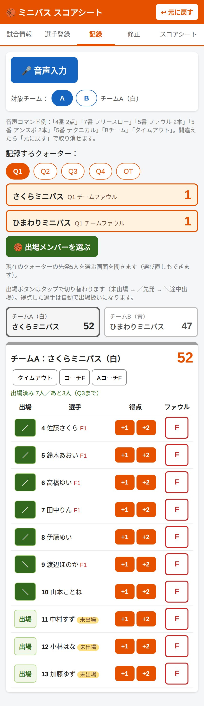
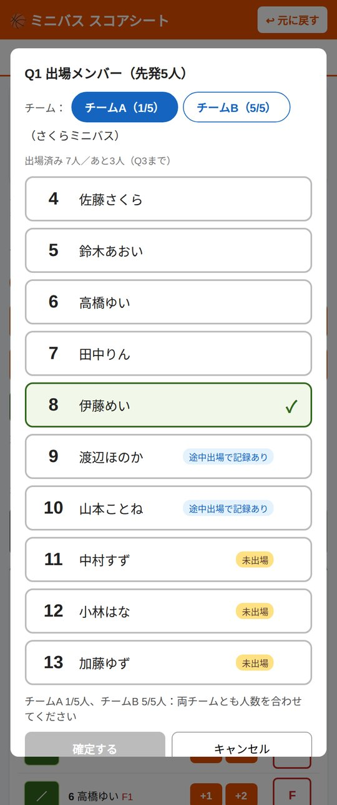
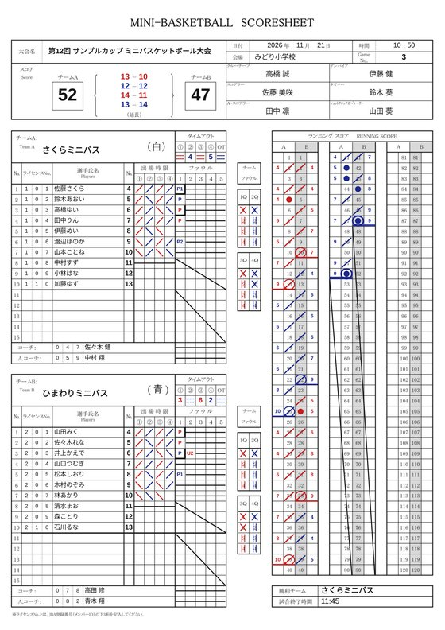

ミニバス スコアシート 使い方
ミニバスケットボールのスコアシートを、スマホでそのまま記録できるアプリ「ミニバス スコアシート - U12試合記録」の使い方です。紙のシートに書くのと同じ感覚で、画面をタップして記録していきます。
中学生以上向けの「バスケ スコアシート - 一般用」の使い方は、一般用の使い方ページを見てください。
基本の流れ
- 試合情報を入れる：「試合情報」のタブで、大会名・会場・チーム名・選手を登録します。選手は、メンバー表を写真で撮って取り込むこともできます（取り込んだ内容は、確認画面で直してから登録されます）。
- 記録する：「記録」のタブで、得点・ファウル・タイムアウトをタップして入れます。声で「4番、2点」のように話して入れることもできます。
- シートで確認する：「シート」のタブで、いつものスコアシートの見た目のまま確認できます。
- 保存して渡す：試合が終わったら、PDFや画像で保存して、そのまま共有できます。
間違えても大丈夫です。「修正」のタブを開くと、記録が一覧で出てきます。直したいものをタップすれば、その1件だけを直したり消したりできます。
画面の見かた

記録画面：選手を選んで、得点やファウルをタップで入れます。

クォーターの始まりには、先発の5人を選ぶ画面が出ます。

シート画面：紙のスコアシートと同じ並びで記録が入ります。
- 音声入力：「4番、2点」「7番、ファウル」のように話すだけでも記録できます。
- メンバー表の取り込み：紙のメンバー表を写真で撮ると、背番号と名前を読み取ります。読み取った内容は必ず確認画面で確かめてから登録してください。
- 練習モード：本番とは別のデータで、自由に練習できます。
データについて
- 記録はスマホの中に保存されます。アカウント登録はいりません。
- 広告やアクセス解析は入っていません。ネットにつながなくても使えます。
- 過去の試合はアプリの中に残り、あとから見返せます。
テスト中に分からないことや、使いにくいところがあれば、声をかけてくれた人まで気軽に伝えてください。